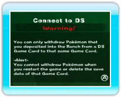
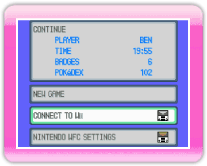
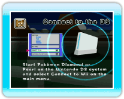
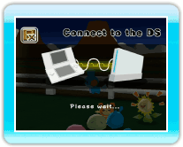
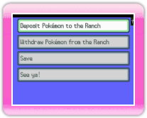
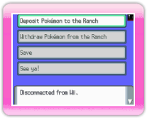
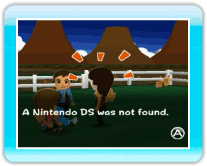
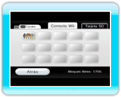

|
12
|
Procedimientos de conexión a una
DS
|
 |
|
Puedes depositar o sacar Pokémon que hayas atrapado en Pokémon Diamond o Pokémon Pearl usando la consola Nintendo DS. Ten en cuenta que:

Cuando seleccionas Connect to DS (conectar con DS) en el menú
principal de My Pokémon Ranch, se visualizará la pantalla que
se muestra a la derecha. Después de leer el mensaje de aviso, oprime
Pantalla de Wii  . .Si cambia la pantalla de My Pokémon Ranch a la pantalla de Wii que se muestra abajo, enciende la consola DS con una tarjeta DS de Pokémon Diamond o Pokémon Pearl. 
Pantalla de DS 
Pantalla de Wii Cuando conectes Pokémon Diamond o Pokémon Pearl a My Pokémon Ranch, comprobarás que es más fácil conectarte si primero seleccionas Connect to DS (conectar con DS) en el menú principal de My Pokémon Ranch, y después seleccionas Connect to Wii (conectar con la consola Wii) en el menú principal de Pokémon Diamond o Pokémon Pearl. Si consigues establecer la conexión con la consola DS, se
visualizará la pantalla de abajo a ambos lados (lado de consola Wii
y lado de consola DS). Desde aquí, manejarás el juego con la consola
DS. Sin embargo, la primera vez que conectas la consola DS, puede
que debas elegir un encargado en el lado de la consola Wii (My
Pokémon Ranch). (→p.17) 
Pantalla de DS 
Pantalla de Wii  Pantalla
de DS En el lado de la consola DS, se visualizará el menú
principal. Realiza una selección y oprime Menú
principal en el lado de la consola DS
Para saber cómo funciona conectar con la consola DS tras este
paso, consulta Error de comunicación
Durante la conexión a veces se mostrarán mensajes de error. Reinicia ambos lados (Wii y DS), tal y como se muestra en cada pantalla. 
Pantalla de DS 
Pantalla de Wii 
Pokémon depositadosPantalla de Wii Los datos de la granja se guardarán en la consola Wii. Nota: Si borras datos guardados, se borrarán todos los Pokémon depositados y no podrás sacarlos. Después de borrar los datos guardados, no podrás recuperar los datos. |
 |
 |
 |